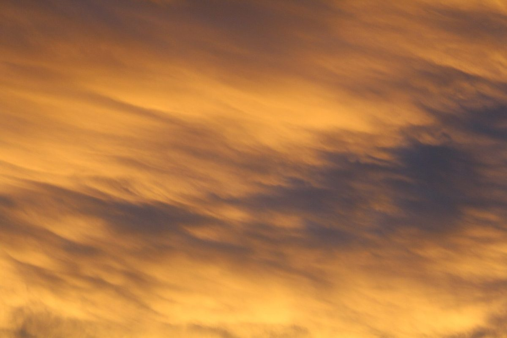
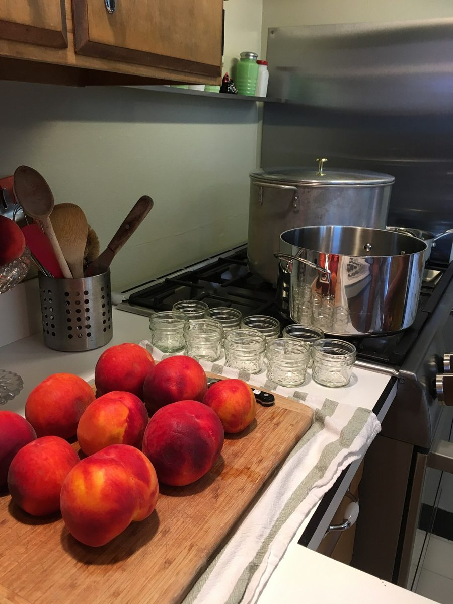
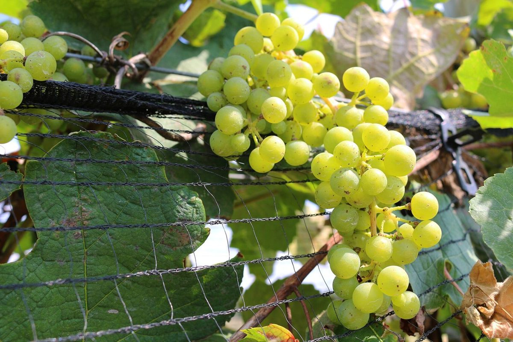

群馬県富岡市・富岡製糸場のそば
ひんやり氷と、
こんがり炭火のお団子。
冷たいかき氷と焼きたてのお団子、ふたつのおいしさをひとつの小さなお店で。
お店の由来・想い
2024年8月、富岡の町に開いた小さなお店
上州やなぎやは、群馬県富岡市にある、かき氷とお団子のお店です。食べログの店舗情報では、オープンは2024年8月11日とされています。Instagramの紹介文では、女性店主が営むかき氷のお店で、自家製シロップを使っていること、のちにお団子の提供も始めたことが紹介されています。
店は世界遺産・富岡製糸場から歩いて数分の距離。口コミなどでは、旬のフルーツを使ったかき氷や、大玉の炭火焼きだんご(「三福だんご」)が人気とされています。カウンター席があり、おひとりでも入りやすいお店と紹介されています。
情報源: 食べログ / Instagram / Yahoo!マップ
店名の由来や店主さまの想いの詳細は確認できていません。この制作サンプルの見出しや言い回しは制作側のイメージです。
夏のひんやり、季節のくだもの
旬のくだものと、自家製のシロップ
写真はフリー素材のイメージです。お店で提供しているものそのものではありません。





メニュー
かき氷と、お団子


メニューの詳細・最新情報はInstagramをご確認ください。
口コミ
こんなお声が聞こえてきそうです
イメージ例製糸場を歩いたあとに立ち寄りました。ふわふわの氷に、くだものの香りがやさしく広がりました。
イメージ例焼きたてのお団子が香ばしくて、かき氷と一緒に頼んでよかったです。
イメージ例カウンターで、ひとりでゆっくり。夏の午後のごほうびになりました。
上記は制作側が作成したイメージ例であり、実在のお客様の声ではありません。


アクセス・店舗情報
富岡製糸場のそばへ
| 所在地 | 〒370-2316 群馬県富岡市富岡1031-3 |
|---|---|
| 電話 | 準備中 |
| 営業時間 | 準備中 |
| 定休日 | 準備中 |
| SNS | Instagram @_yanagi_ya |
営業日・営業時間は変わることがあります。最新情報はInstagramをご確認ください。